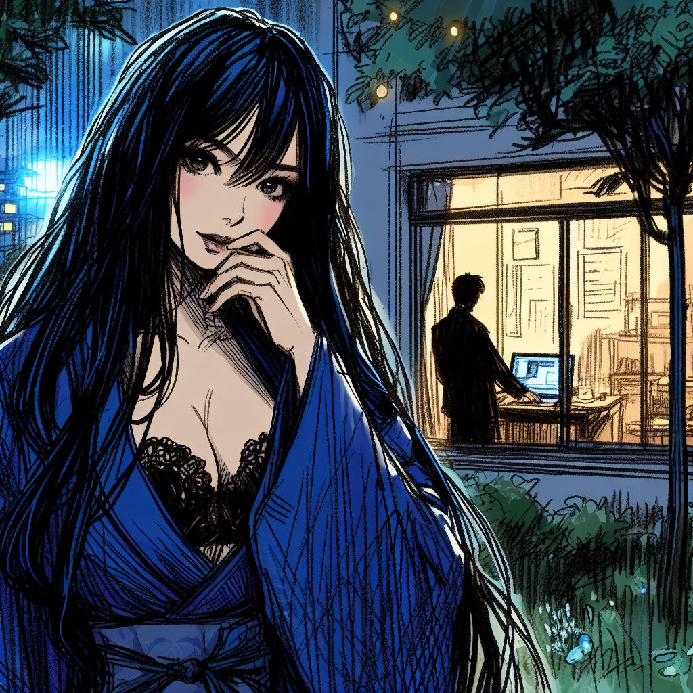

L'Échec d'une Quête Solitaire

Dans un monde où la réalité et le virtuel s'entremêlent, un jeune reclus trouve refuge dans le ōgi, un jeu de stratégie ancien. Hanté par ses propres démons et sa peur du monde extérieur, il est captivé par l'arrivée d'un joueur mystérieux, connu sous le pseudonyme de Komayō, dont les compétences semblent défier toute compréhension. Lorsque la chance lui offre l'opportunité de l'affronter, ce qui commence comme un simple duel de ōgi se transforme en une quête personnelle profonde, confrontant le jeune homme à ses propres peurs, aspirations, et à la réalité implacable de ses choix. Plongez dans une histoire où le jeu devient le miroir de l'âme, explorant les thèmes de l'isolement, de l'identité, et de la recherche désespérée de sens dans l'obscurité de nos propres batailles intérieures.
foo
bar